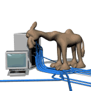

Petite invitation à découvrir Linux
|
|
 |
Vous aimez :
. passez des journées les mains dans le cambouis pour faire marcher
votre vieille mobilette alors qu'on vient de vous en donner une neuve pour
Noël Vous n'aimez pas :
. qu'on vous impose des recettes toutes faites .....alors
plus un instant à perdre, il est temps pour vous de découvrir LINUX |
Les distributions
|
|
Perso, j'ai commencé en installant Mandrake Linux 9.0 en dual boot. C'était une distribution basée sur Red Hat. |
|
Un autre excellent moyen pour découvrir Linux était d'utiliser une distribution live telle que Knoppix.
Il suffit de booter à partir du CD et vous faites tourner votre bécane
sous Linux sans installation et sans utiliser le disque dur.
C'est magique. Gentoo Gentoo, une distribution vraiment hardcore et qui nécessite de compiler localement tous les composants du système d'exploitation. Linux Mint Best distro for beginners :-) Manjaro Nice but not extremely stable. Based on Arch. Debian Distrowatch |
L'écosystème open-source
Linuxgraphics LinuxMAO La musique assistée par ordinateur en logiciels libres. Python MySQL FUNIX Mettez un manchot dans votre PC :-) LOGIN: Mythique magazine sur les logiciels libres, des éditions Posse Presse, malheureusement disparues. Les anciens numéros sont à retrouver sur : Abandonware |
Autres sites d'informatiqueManuel de programmation en php  Un site pour apprendre à créer des sites Web. Et une jolie démonstration des capacités de CSS |